JVM
1. JVM快速入门
指定堆内存，元空间，打印基本 GC 信息，打印对象分布，打印堆数据
HeapDumpOnOutOfMemoryError 指示 JVM 在遇到 OutOfMemoryError 错误时将 heap 转储到物理文件中。
-XX:SurvivorRatio : eden/survivor 空间的比例, 例如-XX:SurvivorRatio=6 设置每个 survivor 和 eden 之间的比例为 1:6。
-XX:+UseConcMarkSweepGC 设置年老代为并发收集。
-XX:+PrintGCTimeStamps 用于输出GC时间戳（JVM启动到当前日期的总时长的时间戳形式）。示例如下：
0.855: [GC (Allocation Failure) [PSYoungGen: 33280K->5118K(38400K)] 33280K->5663K(125952K), 0.0067629 secs] [Times: user=0.01 sys=0.01, real=0.00 secs]
-XX:CMSFullGCsBeforeCompaction 由于并发收集器不对内存空间进行压缩、整理，所以运行一段时间以后会产生“碎片”，使得运行效率降低。此值设置运行多少次GC以后对内存空间进行压缩、整理。
-XX:+UseCMSCompactAtFullCollection 打开对年老代的压缩。该值可能会影响性能，但是可以消除碎片。
-XX:MaxTenuringThreshold=n 设置垃圾最大年龄。
- 如果设置为0，那么年轻代对象不经过Survivor区，直接进入年老代。对于年老代比较多的应用，提高了效率。
- 如果将此值设置为较大值，那么年轻代对象会在Survivor区进行多次复制，增加了对象在年轻代的存活时间，增加在年轻代即被回收的概率。
-XX:CMSInitiatingOccupancyFraction 代表老年代堆空间的使用率，默认值为68。当老年代使用率达到此值之后，并行收集器便开始进行垃圾收集，该参数需要配合UseCMSInitiatingOccupancyOnly一起使用，单独设置无效。
-XX:+CMSParallelRemarkEnabled 采用并行标记方式降低停顿（默认开启）。
-XX:+CMSScavengeBeforeRemark在cms gc remark之前做一次ygc，减少gc roots扫描的对象数，从而提高remark的效率，默认关闭。
1 | JVM_GC="-XX:+DisableExplicitGC -XX:+PrintGCDetails -XX:+PrintHeapAtGC -XX:+PrintTenuringDistribution -XX:+UseConcMarkSweepGC -XX:+PrintGCTimeStamps -XX:+PrintGCDateStamps -XX:CMSFullGCsBeforeCompaction=0 -XX:+UseCMSCompactAtFullCollection -XX:CMSInitiatingOccupancyFraction=80 -XX:+OmitStackTraceInFastThrow -XX:MaxTenuringThreshold=15 -XX:+CMSParallelRemarkEnabled -XX:+CMSScavengeBeforeRemark" |
1.0 经验之谈
设置堆的初始大小和最大大小，为了防止垃圾收集器在初始大小、最大大小之间收缩堆而产生额外的时间，通常把最大、初始大小设置为相同的值。
堆太小，可能会频繁的导致年轻代和老年代的垃圾回收，会产生stw，暂停用户线程
堆太大，假如发生了fullgc，它会扫描整个堆空间，暂停用户线程的时间长。
将新对象预留在新生代，由于 Full GC 的成本远高于 Minor GC，因此尽可能将对象分配在新生代是明智的做法，实际项目中根据 GC 日志分析新生代空间大小分配是否合理，适当通过“-Xmn”命令调节新生代大小，最大限度降低新对象直接进入老年代的情况。
多线程处理引用 -XX:+ParallelRefProcEnabled
连接池和线程池要注意各个参数是否合理
避免频繁创建大对象，定期刷新全量本地缓存可能导致老年代快速增长，需要思考代码层面的优化
排查过程：
- 需要分析超时是否为单点问题，确定与GC相关；
- 通过GC日志，分析GC的哪个阶段耗时较高；
- 通过dump堆内存快照，分析有哪些异常对象；
- 最后根据找到的异常对象，优化处理。
JVM是运行在操作系统之上的，它与硬件没有直接的交互
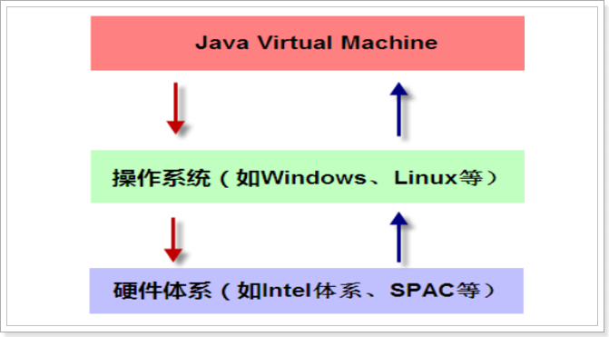

1.1. 结构图
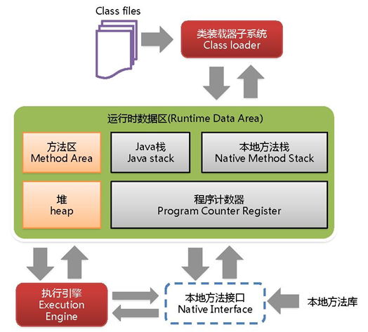
方法区：存储已被虚拟机加载的类元数据信息(元空间)
堆：存放对象实例，几乎所有的对象实例都在这里分配内存
虚拟机栈：虚拟机栈描述的是Java方法执行的内存模型：每个方法被执行的时候都会同时创建一个栈帧（Stack Frame）用于存储局部变量表、操作栈、动态链接、方法出口等信息
程序计数器：当前线程所执行的字节码的行号指示器
本地方法栈：本地方法栈则是为虚拟机使用到的Native方法服务。
1.2. 类加载
Java文件经过编译后变成 .class 字节码文件，字节码文件通过类加载器被搬运到 JVM 虚拟机中。
系统加载 Class 类型的文件主要三步：加载->连接->初始化->卸载。连接过程又可分为三步：验证->准备->解析。
类加载过程的第一步，主要完成下面 3 件事情：
- 通过全类名获取定义此类的二进制字节流
- 将字节流所代表的静态存储结构转换为方法区的运行时数据结构
- 在内存中生成一个代表该类的
Class对象，作为方法区这些数据的访问入口

验证类是否符合 JVM规范，安全性检查，如：文件格式是否错误、语法是否错误、字节码是否合规。Class文件在其常量池会通过字符串记录自己将要使用的其他类或者方法，检查它们是否存在
准备阶段是正式为类变量分配内存并设置类变量初始值的阶段，这些内存都将在方法区中分配：
- 这时候进行内存分配的仅包括类变量（ Class Variables ，即静态变量，被
static关键字修饰的变量，只与类相关，因此被称为类变量），而不包括实例变量。实例变量会在对象实例化时随着对象一块分配在 Java 堆中。 - 从概念上讲，类变量所使用的内存都应当在 方法区 中进行分配。不过有一点需要注意的是：JDK 7 之前，HotSpot 使用永久代来实现方法区的时候，实现是完全符合这种逻辑概念的。 而在 JDK 7 及之后，HotSpot 已经把原本放在永久代的字符串常量池、静态变量等移动到堆中，这个时候类变量则会随着 Class 对象一起存放在 Java 堆中。
代码：变量a在准备阶段会赋初始值，但不是1，而是0，在初始化阶段会被赋值为 1
1 | public class HelloApp { |
解析阶段是虚拟机将常量池内的符号引用替换为直接引用的过程（符号引用比如我现在import java.util.ArrayList这就算符号引用，直接引用就是指针或者对象地址，注意引用对象一定是在内存进行） 。也就是得到类或者字段、方法在内存中的指针或者偏移量。
Java 虚拟机为每个类都准备了一张方法表来存放类中所有的方法。当需要调用一个类的方法的时候，只要知道这个方法在方法表中的偏移量就可以直接调用该方法了。
初始化这一步 JVM 才开始真正执行类中定义的 Java 程序代码(字节码)。
类的生命周期最后一阶段为“卸载”。卸载类即该类的 Class 对象被 GC。
卸载类需要满足 3 个要求:
- 该类的所有的实例对象都已被 GC，也就是说堆不存在该类的实例对象。
- 该类没有在其他任何地方被引用
- 该类的类加载器的实例已被 GC
小结：
- 加载：查找和导入class文件
- 验证：保证加载类的准确性
- 准备：为类变量分配内存并设置类变量初始值
- 解析：把类中的符号引用转换为直接引用
- 初始化：对类的静态变量，静态代码块执行初始化操作
- 使用：JVM 开始从入口方法开始执行用户的程序代码
- 卸载：当用户程序代码执行完毕后，JVM便开始销毁创建的Class对象。
类加载器ClassLoader
负责加载class文件，class文件在文件开头有特定的文件标示，并且ClassLoader只负责class文件的加载，至于它是否可以运行，则由Execution Engine决定。
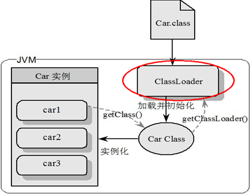
类加载器分为四种：前三种为虚拟机自带的加载器。
- BootstrapClassLoader(启动类加载器) ：最顶层的加载类，由 C++实现，负责加载
%JAVA_HOME%/lib目录下的 jar 包和类或者被-Xbootclasspath参数指定的路径中的所有类。 - ExtensionClassLoader(扩展类加载器) ：主要负责加载
%JRE_HOME%/lib/ext目录下的 jar 包和类，或被java.ext.dirs系统变量所指定的路径下的 jar 包。 - AppClassLoader(应用程序类加载器) ：面向我们用户的加载器，负责加载当前应用 classpath 下的所有 jar 包和类。
- 用户自定义加载器 Java.lang.ClassLoader的子类，用户可以定制类的加载方式
工作过程：
- 1、当AppClassLoader加载一个class时，它首先不会自己去尝试加载这个类，而是把类加载请求委派给父类加载器ExtClassLoader去完成。
- 2、当ExtClassLoader加载一个class时，它首先也不会自己去尝试加载这个类，而是把类加载请求委派给BootStrapClassLoader去完成。
- 3、如果BootStrapClassLoader加载失败（例如在$JAVA_HOME/jre/lib里未查找到该class），会使用ExtClassLoader来尝试加载；
- 4、若ExtClassLoader也加载失败，则会使用AppClassLoader来加载
- 5、如果AppClassLoader也加载失败，则会报出异常ClassNotFoundException
双亲委派
在类加载的时候，系统会首先判断当前类是否被加载过。已经被加载的类会直接返回，否则才会尝试加载。

好处：
防止内存中出现多份同样的字节码(安全性角度)
比如加载位于 rt.jar 包中的类 java.lang.Object，不管是哪个加载器加载这个类，最终都是委托给顶层的启动类加载器进行加载，这样就保证了使用不同的类加载器最终得到的都是同样一个 Object对象。
避免类的重复加载（JVM 区分不同类的方式不仅仅根据类名，相同的类文件被不同的类加载器加载产生的是两个不同的类），也保证了 Java 的核心 API 不被篡改。
写段儿代码演示类加载器：
1 | public class Demo { |
打印控制台中的sun.misc.Launcher，是一个java虚拟机的入口应用
由于BootStrap ClassLoader是用c++写的，所以在返回该ClassLoader时会返回null
1.3. 常量池
运行时常量池
Class 文件中除了有类的版本、字段、方法、接口等描述信息外，还有用于存放编译期生成的各种字面量（Literal）和符号引用（Symbolic Reference）的 常量池表(Constant Pool Table) 。
常量池表会在类加载后存放到方法区的运行时常量池中。
既然运行时常量池是方法区的一部分，自然受到方法区内存的限制，当常量池无法再申请到内存时会抛出 OutOfMemoryError 错误。
字符串常量池
是 JVM 为了提升性能和减少内存消耗针对字符串（String 类）专门开辟的一块区域，主要目的是为了避免字符串的重复创建。
JDK1.7 之前，字符串常量池存放在永久代。
JDK1.7 字符串常量池和静态变量从永久代移动了 Java 堆中。 因为永久代（方法区实现）的 GC 回收效率太低，只有在整堆收集 (Full GC)的时候才会被执行 GC。Java 程序中通常会有大量的被创建的字符串等待回收，将字符串常量池放到堆中，能够更高效及时地回收字符串内存。
1.4. 本地接口Native Interface
本地接口的作用是融合不同的编程语言为 Java 所用，它的初衷是融合 C/C++程序，Java 诞生的时候是 C/C++横行的时候，要想立足，必须有调用 C/C++程序，于是就在内存中专门开辟了一块区域处理标记为native的代码，它的具体做法是 Native Method Stack中登记 native方法，在Execution Engine 执行时加载native libraies。
目前该方法使用的越来越少了，除非是与硬件有关的应用，比如通过Java程序驱动打印机或者Java系统管理生产设备，在企业级应用中已经比较少见。因为现在的异构领域间的通信很发达，比如可以使用 Socket通信，也可以使用Web Service等等，不多做介绍。
1.5. 本地方法栈Native Method Stack
它的具体做法是Native Method Stack中登记native方法，在Execution Engine 执行时加载本地方法库。
和虚拟机栈所发挥的作用非常相似，区别是： 虚拟机栈为虚拟机执行 Java 方法 （也就是字节码）服务，而本地方法栈则为虚拟机使用到的 Native 方法服务。
本地方法被执行的时候，在本地方法栈也会创建一个栈帧，用于存放该本地方法的局部变量表、操作数栈、动态链接、出口信息。
为了保证线程中的局部变量不被别的线程访问到，虚拟机栈和本地方法栈是线程私有的。
1.6. 程序计数器 PC寄存器
- 字节码解释器通过改变程序计数器来依次读取指令，从而实现代码的流程控制，如：顺序执行、选择、循环、异常处理。
- 在多线程的情况下，程序计数器用于记录当前线程执行的位置，从而当线程被切换回来的时候能够知道该线程上次运行到哪儿了。
⚠️ 注意 ：程序计数器是唯一一个不会出现 OutOfMemoryError 的内存区域，它的生命周期随着线程的创建而创建，随着线程的结束而死亡。
如果执行的是 native 方法，那么程序计数器记录的是 undefined 地址，只有执行的是 Java 代码时程序计数器记录的才是下一条指令的地址。
所以，程序计数器私有主要是为了线程切换后能恢复到正确的执行位置。
1.7. Method Area方法区 -> 元空间
方法区是被所有线程共享，所有字段和方法字节码，以及一些特殊方法如构造函数，接口代码也在此定义。简单说，所有定义的方法的信息都保存在该区域，此区属于共享区间。
方法区会存储已被虚拟机加载的 类信息、字段信息、方法信息、常量、静态变量、即时编译器编译后的代码缓存等数据。
But
对象实例存在堆内存中，和方法区无关。
元空间
永久代以及元空间是 HotSpot 虚拟机对虚拟机规范中方法区的两种实现方式。 永久代是 JDK 1.8 之前的方法区实现，JDK 1.8 及以后方法区的实现变成了元空间。
为什么要将永久代 (PermGen) 替换为元空间 (MetaSpace) 呢?
- 整个永久代有一个 JVM 本身设置的固定大小上限，无法进行调整，而元空间使用的是直接内存，受本机可用内存的限制，虽然元空间仍旧可能溢出，但是比原来出现的几率会更小。
- 元空间里面存放的是类的元数据，这样加载多少类的元数据就不由
MaxPermSize控制了, 而由系统的实际可用空间来控制，这样能加载的类就更多了。
常用参数
JDK 1.8 之前永久代：
1 | -XX:PermSize=N //方法区 (永久代) 初始大小 |
相对而言，垃圾收集行为在这个区域是比较少出现的，但并非数据进入方法区后就“永久存在”了。
JDK 1.8 之后元空间使用的是直接内存：
1 | -XX:MetaspaceSize=N //设置 Metaspace 的初始（和最小大小） |
与永久代很大的不同就是，如果不指定大小的话，随着更多类的创建，虚拟机会耗尽所有可用的系统内存。
1.8. 一个代码例子
现在有一个简单的学生类 和main方法。执行main方法的步骤如下:
- 编译好 App.java 后得到 App.class 后，执行 App.class，系统会启动一个 JVM 进程，从 classpath 路径中找到一个名为 App.class 的二进制文件，将 App 的类信息加载到运行时数据区的方法区内，这个过程叫做 App 类的加载
- JVM 找到 App 的主程序入口，执行main方法
- 这个main中的第一条语句为 Student student = new Student(“tellUrDream”) ，就是让 JVM 创建一个Student对象，但是这个时候方法区中是没有 Student 类的信息的，所以 JVM 马上加载 Student 类，把 Student 类的信息放到方法区中
- 加载完 Student 类后，JVM 在堆中为一个新的 Student 实例分配内存，然后调用构造函数初始化 Student 实例，这个 Student 实例持有 指向方法区中的 Student 类的类型信息 的引用
- 执行student.sayName();时，JVM 根据 student 的引用找到 student 对象，然后根据 student 对象持有的引用定位到方法区中 student 类的类型信息的方法表，获得 sayName() 的字节码地址。
- 执行sayName()
其实也不用管太多，只需要知道对象实例初始化时会去方法区中找类信息，完成后再到栈那里去运行方法。找方法就在方法表中找。
2. 虚拟机栈
Stack 栈是什么？
栈也叫栈内存，主管Java程序的运行，是在线程创建时创建，它的生命期是跟随线程的生命期，线程结束栈内存也就释放。
对于栈来说不存在垃圾回收问题，只要线程一结束该栈就Over，生命周期和线程一致，是线程私有的。8种基本类型的变量+对象的引用变量+实例方法都是在函数的栈内存中分配。
栈存储什么?
栈中的数据都是以栈帧（Stack Frame）的格式存在，栈帧是一个内存区块，是一个数据集，是一个有关方法(Method)和运行期数据的数据集。每个栈帧中都拥有：局部变量表、操作数栈、动态链接、方法返回地址。
栈帧中主要保存3 类数据：
-
本地变量（Local Variables）：输入参数和输出参数以及方法内的变量。
-
栈操作（Operand Stack）：记录出栈、入栈的操作。
-
栈帧数据（Frame Data）：包括类文件、方法等等。

局部变量表 主要存放了编译期可知的各种数据类型（boolean、byte、char、short、int、float、long、double）、对象引用（reference 类型，它不同于对象本身，可能是一个指向对象起始地址的引用指针，也可能是指向一个代表对象的句柄或其他与此对象相关的位置）。
动态链接 主要服务一个方法需要调用其他方法的场景。在 Java 源文件被编译成字节码文件时，所有的变量和方法引用都作为符号引用 （Symbilic Reference）保存在 Class 文件的常量池里。当一个方法要调用其他方法，需要将常量池中指向方法的符号引用转化为其在内存地址中的直接引用。动态链接的作用就是为了将符号引用转换为调用方法的直接引用。
栈上分配
- 对象是线程私有的，即不会被其他线程访问或共享。
- 对象的生命周期在方法内部，即对象的引用不会逃逸出方法（不会被方法外部的代码所引用）。
- 对象是值对象（Value Object），即对象在存储和使用上与原生数据类型类似，没有复杂的生命周期或引用关系。
- 分配和回收对象的开销更低：栈上分配不需要进行堆内存的动态分配和垃圾回收，因此可以减少运行时的开销。
- 对象可以更快地释放：当方法调用结束时，栈帧中的对象会随着栈帧的弹出而自动释放，无需等待垃圾回收。
常见问题栈溢出：Exception in thread “main” java.lang.StackOverflowError
通常出现在递归调用时。
若栈的内存大小不允许动态扩展，那么当线程请求栈的深度超过当前 Java 虚拟机栈的最大深度的时候，就抛出 StackOverFlowError 错误。
3. 堆
此内存区域的唯一目的就是存放对象实例，几乎所有的对象实例以及数组都在这里分配内存。 从 JDK 1.7 开始已经默认开启逃逸分析，如果某些方法中的对象引用没有被返回或者未被外面使用（也就是未逃逸出去），那么对象可以直接在栈上分配内存。
堆栈方法区的关系：
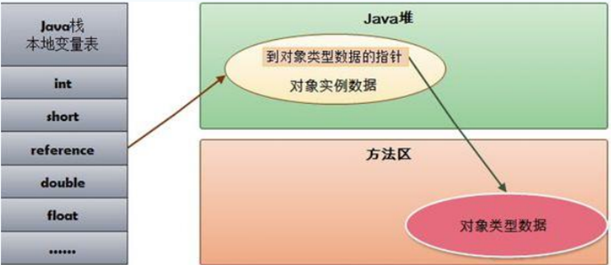
HotSpot是使用指针的方式来访问对象：
-
Java堆中会存放访问类元数据的地址
-
reference存储的就是对象的地址
三种JVM：
•Sun公司的HotSpot
•BEA公司的JRockit
•IBM公司的J9 VM
3.1. 堆体系概述
Java7之前
Heap 堆：一个JVM实例只存在一个堆内存，堆内存的大小是可以调节的。类加载器读取了类文件后，需要把类、方法、常变量放到堆内存中，保存所有引用类型的真实信息，以方便执行器执行，堆内存逻辑上分为三部分：
-
Young Generation Space 新生区 Young/New
-
Tenure generation space 养老区 Old/Tenure
-
Permanent Space 永久区 Perm
也称为：新生代（年轻代）、老年代、永久代（持久代）。
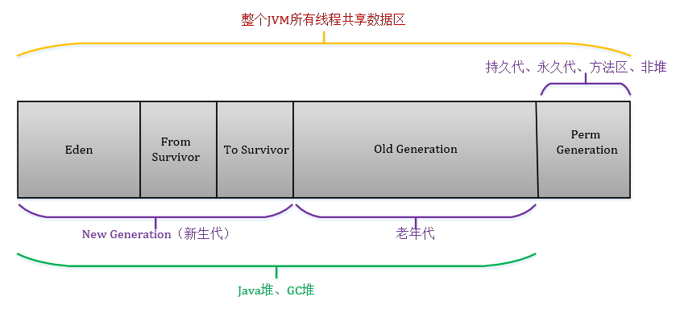

3.1.1. 新生区
新生区是对象的诞生、成长、消亡的区域，一个对象在这里产生，应用，最后被垃圾回收器收集，结束生命。新生区又分为两部分： 伊甸区（Eden space）和幸存者区（Survivor pace） ，所有的对象都是在伊甸区被new出来的。幸存区有两个： From区（Survivor From space）和To区（Survivor To space）。当伊甸园的空间用完时，程序又需要创建对象，JVM的垃圾回收器将对伊甸园区进行垃圾回收(Minor GC)，将伊甸园区中的不再被其他对象所引用的对象进行销毁。然后将伊甸园中的剩余对象移动到幸存 From区。
MinorGC垃圾回收的过程如下：
-
eden、From 复制到 To，年龄+1
首先，当Eden区满的时候会触发第一次GC,把还活着的对象拷贝到Survivor From区，当Eden区再次触发GC的时候会扫描Eden区和From区域，对这两个区域进行垃圾回收，经过这次回收后还存活的对象，则直接复制到To区域（如果有对象的年龄已经达到了老年的标准，则赋值到老年代区），同时把这些对象的年龄+1 -
清空 eden、Survivor From
然后，清空Eden和From中的对象 -
To和 From 互换
最后，To和From互换，原To成为下一次GC时的From区。部分对象会在From和To区域中复制来复制去,如此交换15次(由JVM参数MaxTenuringThreshold决定,这个参数默认是15)，最终如果还是存活,就存入到老年代 -
大对象特殊情况
如果分配的新对象比较大Eden区放不下，但Old区可以放下时，对象会被直接分配到Old区（即没有晋升这一过程，直接到老年代了）
MinorGC的过程：复制 -> 清空 -> 互换
3.1.2. 老年代
经历多次GC仍然存在的对象（默认是15次），老年代的对象比较稳定，不会频繁的GC
若养老区也满了，那么这个时候将产生MajorGC（FullGC），进行养老区的内存清理。若养老区执行了Full GC之后发现依然无法进行对象的保存，就会产生OOM异常“OutOfMemoryError”。
如果出现java.lang.OutOfMemoryError: Java heap space异常，说明Java虚拟机的堆内存不够。原因有二：
（1）Java虚拟机的堆内存设置不够，可以通过参数-Xms、-Xmx来调整。
（2）代码中创建了大量大对象，并且长时间不能被垃圾收集器收集（存在被引用）。
3.1.3. 永久代
永久存储区是一个常驻内存区域，用于存放JDK自身所携带的 Class、Interface 的元数据，也就是说它存储的是运行环境必须的类信息，被装载进此区域的数据是不会被垃圾回收器回收掉的，关闭 JVM 才会释放此区域所占用的内存。
对于HotSpot虚拟机，很多开发者习惯将方法区称之为“永久代(Parmanent Gen)” ，但严格本质上说两者不同，或者说使用永久代来实现方法区而已，永久代是方法区(相当于是一个接口interface)的一个实现。
实际而言，方法区（Method Area）和堆一样，是各个线程共享的内存区域，它用于存储虚拟机加载的：类信息+普通常量+静态常量+编译器编译后的代码等等，虽然JVM规范将方法区描述为堆的一个逻辑部分，但它却还有一个别名叫做Non-Heap(非堆)，目的就是要和堆分开。
如果出现java.lang.OutOfMemoryError: PermGen space，说明是Java虚拟机对永久代Perm内存设置不够。一般出现这种情况，都是程序启动需要加载大量的第三方jar包。例如：在一个Tomcat下部署了太多的应用。或者大量动态反射生成的类不断被加载，最终导致Perm区被占满。
Jdk1.6及之前： 有永久代，常量池1.6在方法区
Jdk1.7： 有永久代，但已经逐步“去永久代”，常量池1.7在堆
Jdk1.8及之后： 无永久代，常量池1.8在堆中
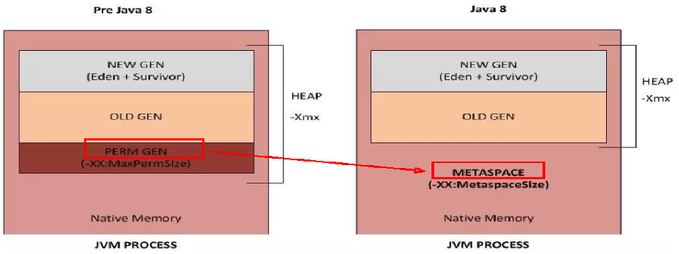
永久代与元空间的最大区别之处：
永久代使用的是jvm的堆内存，但是java8以后的元空间并不在虚拟机中而是使用本机物理内存。因此，默认情况下，元空间的大小仅受本地内存限制。
3.2. 堆参数调优入门
均以JDK1.8+HotSpot为例
jdk1.7：
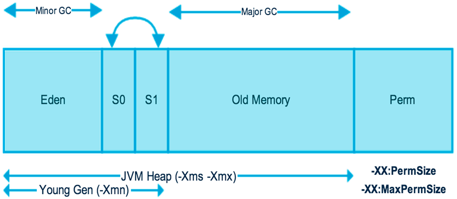
jdk1.8：
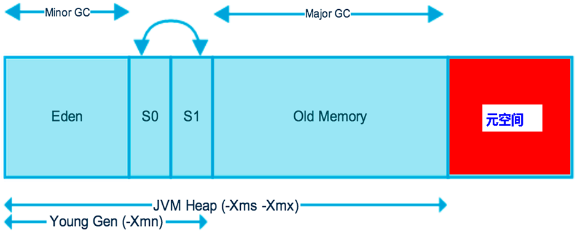
3.2.1. 常用JVM参数
怎么对jvm进行调优？通过参数配置
| 参数 | 备注 |
|---|---|
| -Xms | 初始堆大小。只要启动，就占用的堆大小，默认是内存的1/64 |
| -Xmx | 最大堆大小。默认是内存的1/4 |
| -Xmn | 新生区堆大小 |
| -XX:+PrintGCDetails | 输出详细的GC处理日志 |
java代码查看jvm堆的默认值大小：
1 | Runtime.getRuntime().maxMemory() // 堆的最大值，默认是内存的1/4 |
3.2.2. 怎么设置JVM参数
程序运行时，可以给该程序设置jvm参数，不同的工具设置方式不同。
如果是命令行运行：
1 | java -Xmx50m -Xms10m HeapDemo |
eclipse运行的设置方式如下：
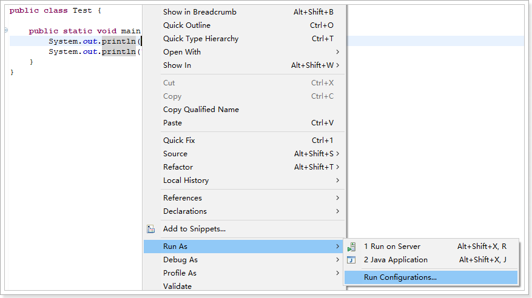
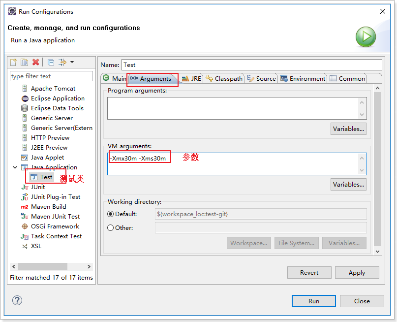
idea运行时设置方式如下：
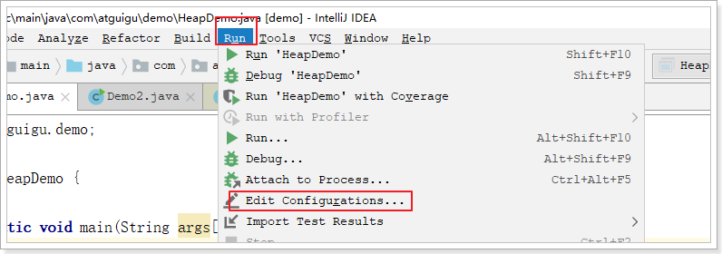
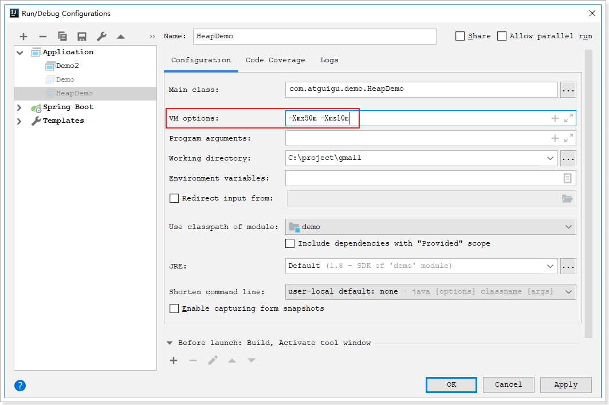
3.2.3. 查看堆内存详情
1 | public class Demo2 { |
执行前配置参数：-Xmx50m -Xms30m -XX:+PrintGCDetails
执行：看到如下信息
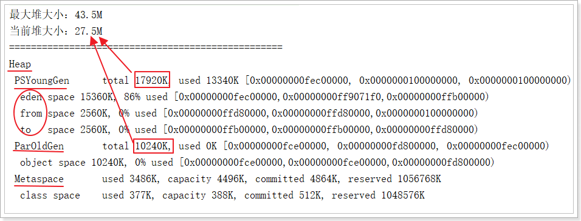
新生代和老年代的堆大小之和是Runtime.getRuntime().totalMemory()
3.2.4. GC演示
1 | public class HeapDemo { |
jvm参数设置成最大堆内存100M，当前堆内存10M：-Xmx100m -Xms10m -XX:+PrintGCDetails
再次运行，可以看到minor GC和full GC日志：
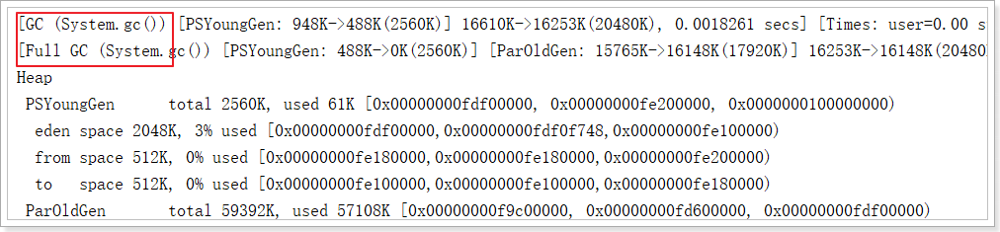
3.2.5. OOM演示
把上面案例中的jvm参数改成最大堆内存设置成50M，当前堆内存设置成10M，执行测试： -Xmx50m -Xms10m
1 | =====================Begin========================= |
表现形式还会有几种，比如：
- java.lang.OutOfMemoryError: GC Overhead Limit Exceeded ： 当 JVM 花太多时间执行垃圾回收并且只能回收很少的堆空间时，就会发生此错误。
- java.lang.OutOfMemoryError: Java heap space :假如在创建新的对象时, 堆内存中的空间不足以存放新创建的对象, 就会引发此错误。(和配置的最大堆内存有关，且受制于物理内存大小。最大堆内存可通过
-Xmx参数配置，若没有特别配置，将会使用默认值，详见：Default Java 8 max heap sizeopen in new window)
实际开发中怎么定位这种错误信息？MAT工具
3.3. MAT工具
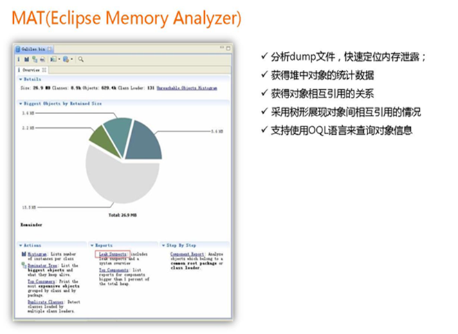
安装方式：eclipse插件市场下载
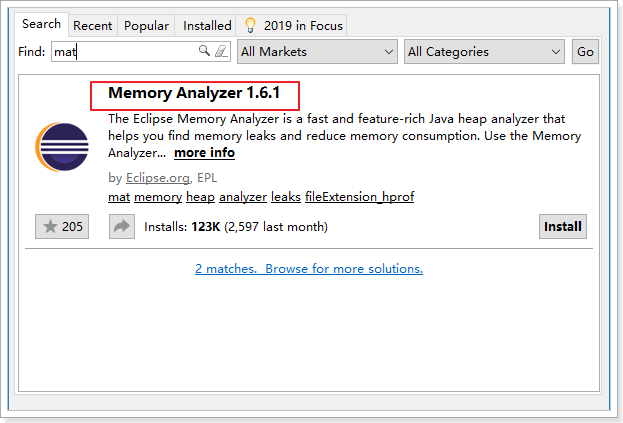
3.3.1. MAT工具的使用
运行参数：-Xmx30m -Xms10m -XX:+HeapDumpOnOutOfMemoryError
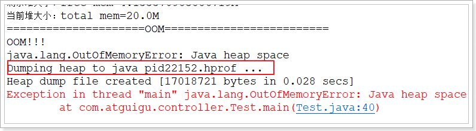
重新刷新项目：看到dump文件
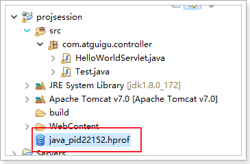
打开：
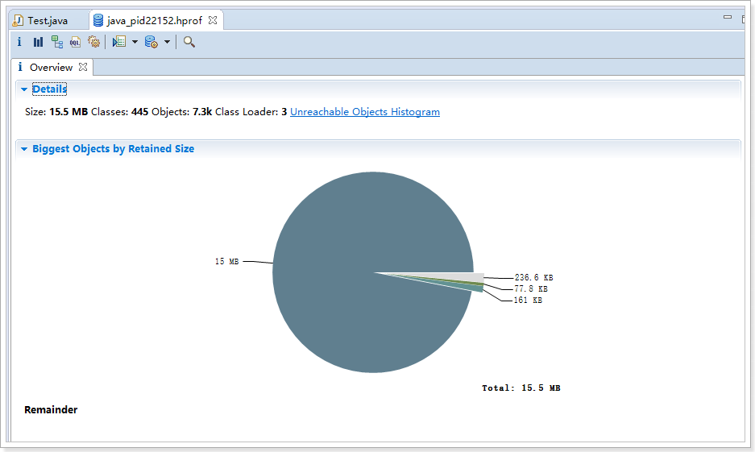
3.3.2. idea分析dump文件
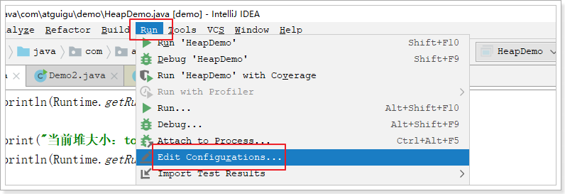
把上例中运行参数改成：
1 | -Xmx50m -Xms10m -XX:+HeapDumpOnOutOfMemoryError -XX:HeapDumpPath=D:\tmp |
-XX:HeapDumpPath：生成dump文件路径。
再次执行：生成C:\tmp\java_pid20328.hprof文件
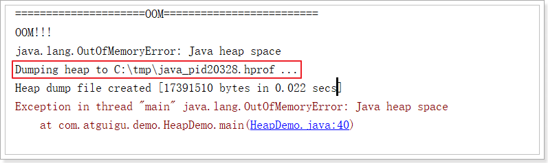
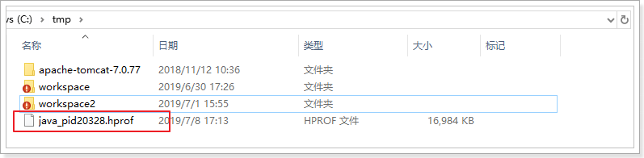
生成的这个文件怎么打开？jdk自带了该类型文件的解读工具：jvisualvm.exe
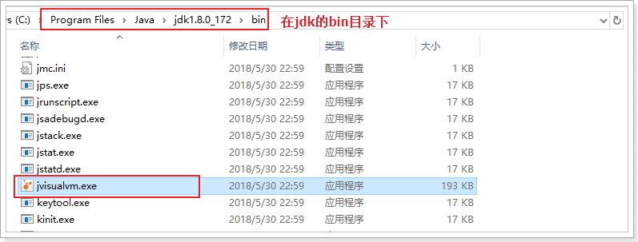
双击打开：
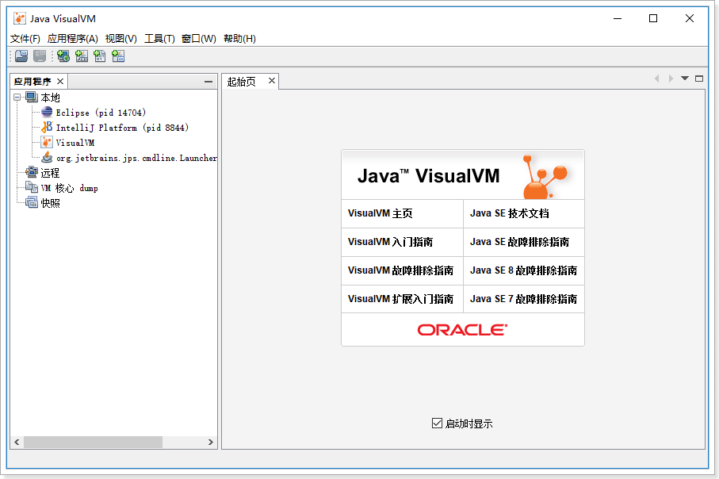
文件–>装入–>选择要打开的文件即可
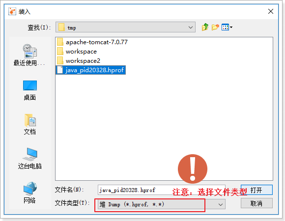
装入后：
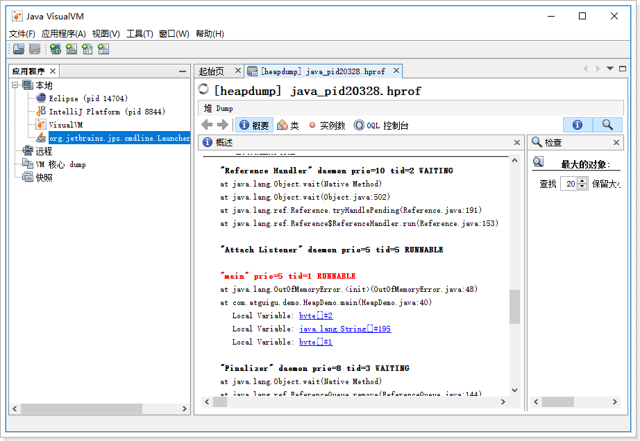
3.4. 常用命令行（了解）
查看java进程：jps -l
查看某个java进程所有参数：jinfo 进程号
查看某个java进程总结性垃圾回收统计：jstat -gc 20292
3.5. jvm结构总结
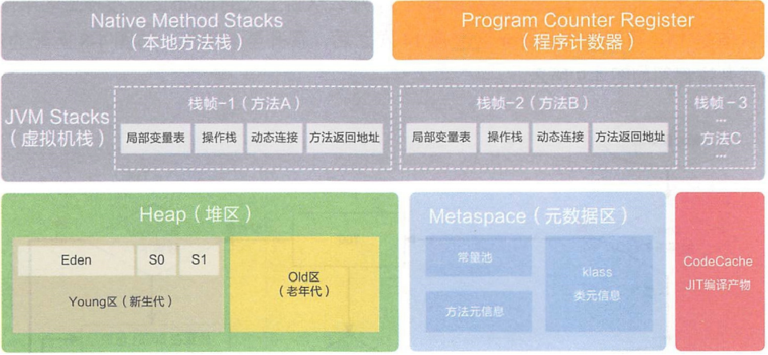
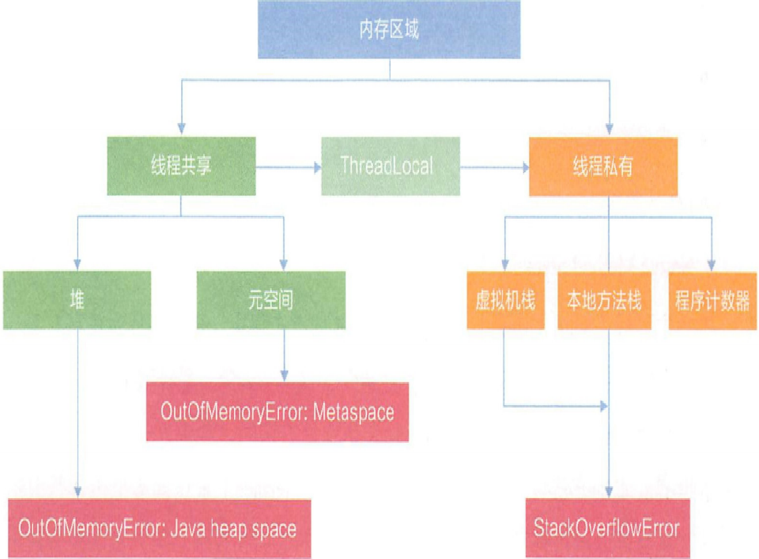
3.6. 内存分配和回收原则
大对象就是需要大量连续内存空间的对象（比如：字符串、数组） 。
大多数情况下，对象在新生代中 Eden 区分配。当 Eden 区没有足够空间进行分配时，虚拟机将发起一次 Minor GC。GC 期间 如果又发现 无法存入 Survivor 空间，所以只好通过 分配担保机制 把新生代的对象提前转移到老年代中去， 老年代上的空间足够存放就不会出现 Full GC。
大对象直接进入老年代主要是为了避免为大对象分配内存时由于分配担保机制带来的复制而降低效率。 空间分配担保是为了确保在 Minor GC 之前老年代本身还有容纳新生代所有对象的剩余空间。
如果对象在 Eden 出生并经过第一次 Minor GC 后仍然能够存活，并且能被 Survivor 容纳的话，将被移动到 Survivor 空间（s0 或者 s1）中，并将对象年龄设为 1(Eden 区->Survivor 区后对象的初始年龄变为 1)。
对象在 Survivor 中每熬过一次 MinorGC,年龄就增加 1 岁，当它的年龄增加到一定程度（默认为 15 岁），就会被晋升到老年代中。对象晋升到老年代的年龄阈值，可以通过参数 -XX:MaxTenuringThreshold 和 -XX:TargetSurvivorRatio=percent来设置。
Hotspot 遍历所有对象时，按照年龄从小到大对其所占用的大小进行累积，当累积的某个年龄大小超过了 survivor 区的 50% 时（默认值是 50%，可以通过
-XX:TargetSurvivorRatio=percent来设置）。取这个年龄和 MaxTenuringThreshold 中更小的一个值，作为新的晋升年龄阈值。
4. GC垃圾回收
两大种：
部分收集 (Partial GC)：
- 新生代收集（Minor GC / Young GC）：只对新生代进行垃圾收集；
- 老年代收集（Major GC / Old GC）：只对老年代进行垃圾收集。需要注意的是 Major GC 在有的语境中也用于指代整堆收集；
- 混合收集（Mixed GC）：对整个新生代和部分老年代进行垃圾收集。
整堆收集 (Full GC)：收集整个 Java 堆和方法区。
面试题：
- JVM内存模型以及分区，需要详细到每个区放什么
- 堆里面的分区：Eden，survival from to，老年代，各自的特点。
- GC的三种收集方法：标记清除、标记整理、复制算法的原理与特点，分别用在什么地方
- Minor GC与Full GC分别在什么时候发生
JVM垃圾判定算法：（对象已死？）
- 引用计数法(Reference-Counting)
- 可达性分析算法（根搜索算法）
GC垃圾回收主要有四大算法：（怎么找到已死对象并清除？）
- 复制算法(Copying)
- 标记清除(Mark-Sweep)
- 标记压缩(Mark-Compact)，又称标记整理
- 分代收集算法(Generational-Collection)
4.1. JVM复习
JVM结构图：
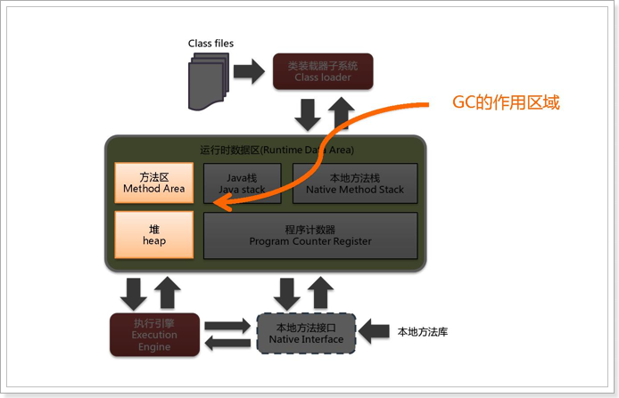
堆内存结构：
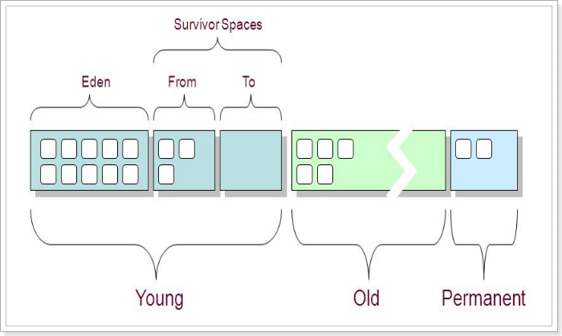
GC的特点：
- 次数上频繁收集Young区
- 次数上较少收集Old区
- 基本不动Perm区
4.2. 垃圾判定
如果一个或多个对象没有任何的引用指向它了，那么这个对象现在就是垃圾，如果定位了垃圾，则有可能会被垃圾回收器回收。如果要定位什么是垃圾，有两种方式来确定，第一个是引用计数法，第二个是可达性分析算法
4.2.1. 引用计数法(Reference-Counting)
引用计数算法是通过判断对象的引用数量来决定对象是否可以被回收。
给对象中添加一个引用计数器，每当有一个地方引用它时，计数器值就加1；当引用失效时，计数器值就减1；任何时刻计数器为0的对象就是不可能再被使用的。
优点：
- 简单，高效，现在的objective-c、python等用的就是这种算法。
缺点：
-
引用和去引用伴随着加减算法，影响性能
-
很难处理循环引用，相互引用的两个对象则无法释放。
因此目前主流的Java虚拟机都摒弃掉了这种算法。
4.2.2. 可达性分析算法
这个算法的基本思想就是通过一系列的称为 “GC Roots” 的对象作为起点，从这些节点开始向下搜索，节点所走过的路径称为引用链，当一个对象到 GC Roots 没有任何引用链相连的话，则证明此对象是不可用的。

在Java语言中，可以作为GC Roots的对象包括下面几种：
- 虚拟机栈（栈帧中的本地变量表）中的引用对象。比如：各个线程被调用的方法中使用到的参数、局部变量等。
- 方法区中的类静态属性引用的对象。比如：Java类的引用类型静态变量
- 方法区中的常量引用的对象。 比如：字符串常量池（StringTable）里的引用
- 本地方法栈中JNI（Native方法）的引用对象
- 所有被同步锁持有的对象
除了堆空间的周边，比如：虚拟机栈、本地方法栈、方法区、字符串常量池等地方对堆空间进行引用的，都可以作为GC Roots进行可达性分析 。此外，由于Root采用栈方式存放变量和指针，所以如果一个指针，它保存了堆内存里面的对象，但是自己又不存放在堆内存里面，那它就是一个Root。
真正标记以为对象为可回收状态至少要标记两次。
第一次标记：不在 GC Roots 链中，标记为可回收对象。
第二次标记：判断当前对象是否实现了finalize() 方法，如果没有实现则直接判定这个对象可以回收，如果实现了就会先放入一个队列中。并由虚拟机建立一个低优先级的程序去执行它，随后就会进行第二次小规模标记，在这次被标记的对象就会真正被回收了！
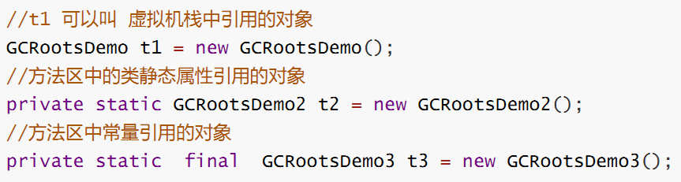
# 堆内存快照
https://imlql.cn/post/d54daa0f.html

4.2.3. 四种引用类型
平时只会用到强引用和软引用。
强引用：
类似于 Object obj = new Object(); 只有所有 GC Roots 对象都不通过【强引用】引用该对象，该对象才能被垃圾回收
例子：ThriftIO使用连接池去管理连接；这些连接的底层实现是 SocksSocketImpl
软引用：
SoftReference 类实现软引用。在系统要发生内存溢出异常之前，才会将这些对象列进回收范围之中进行二次回收。如果这次回收还没有足够的内存，才会抛出内存溢出异常。软引用可用来实现内存敏感的高速缓存。
软引用可以加速 JVM 对垃圾内存的回收速度，可以维护系统的运行安全，防止内存溢出（OutOfMemory）等问题的产生。
弱引用：
WeakReference 类实现弱引用。对象只能生存到下一次垃圾收集之前。在垃圾收集器工作时，无论内存是否足够都会回收掉只被弱引用关联的对象。
**虚引用 **PhantomReference ：
PhantomReference 类实现虚引用。无法通过虚引用获取一个对象的实例，为一个对象设置虚引用关联的唯一目的就是能在这个对象被收集器回收时收到一个系统通知。如果一个对象仅持有虚引用，那么它就和没有任何引用一样，在任何时候都可能被垃圾回收。 虚引用主要用来跟踪对象被垃圾回收的活动。
例子：数据源连接
作用：
虚引用主要用来跟踪对象被垃圾回收器回收的活动。虚引用与软引用和弱引用的一个区别在于：虚引用必须和引用队列 （ReferenceQueue）联合使用。当垃圾回收器准备回收一个对象时，如果发现它还有虚引用，就会在回收对象的内存之前，把这个虚引用加入到与之 关联的引用队列中。你声明虚引用的时候是要传入一个queue的。当你的虚引用所引用的对象已经执行完finalize函数的时候，就会把对象加到queue里面。你可以通过判断queue里面是不是有对象来判断你的对象是不是要被回收了
4.3. 垃圾回收算法
在介绍JVM垃圾回收算法前，先介绍一个概念：Stop-the-World
Stop-the-world意味着 JVM由于要执行GC而停止了应用程序的执行，并且这种情形会在任何一种GC算法中发生。当Stop-the-world发生时，除了GC所需的线程以外，所有线程都处于等待状态直到GC任务完成。事实上，GC优化很多时候就是指减少Stop-the-world发生的时间，从而使系统具有高吞吐 、低停顿的特点。
4.3.1. 标记清除(Mark-Sweep) 最垃的
标记-清除（Mark-and-Sweep）算法分为“标记（Mark）”和“清除（Sweep）”阶段：首先标记出所有不需要回收的对象，在标记完成后统一回收掉所有没有被标记的对象。
它是最基础的收集算法，后续的算法都是对其不足进行改进得到。
- 当一个对象被创建时，给一个标记位，假设为 0 (false)；
- 在标记阶段，我们将所有可达对象（或用户可以引用的对象）的标记位设置为 1 (true)；
- 扫描阶段清除的就是标记位为 0 (false)的对象。

缺点：
- 效率问题：标记和清除两个过程效率都不高。
- 空间问题：标记清除后会产生大量不连续的内存碎片，此外还得维持一个内存的空闲列表，这又是一种开销。
4.3.2. 标记复制(Copying)
该算法将内存平均分成两部分，然后每次只使用其中的一部分，当这部分内存满的时候，将内存中所有存活的对象复制到另一个内存中，然后将之前的内存清空，只使用这部分内存，循环下去。

优点：
- 实现简单
- 不产生内存碎片
缺点：
- 可用内存变小：可用内存缩小为原来的一半。
- 不适合老年代：如果对象的存活率很高，我们可以极端一点，假设是100%存活（如老年代），那么我们需要将所有对象都复制一遍，并将所有引用地址重置一遍。所以要想使用复制算法，最起码对象的存活率要非常低才行。
年轻代中使用的是Minor GC，这种GC算法采用的是复制算法(Copying)。
HotSpot JVM把年轻代分为了三部分：1个Eden区和2个Survivor区（分别叫from和to）。默认比例为8:1:1,一般情况下，新创建的对象都会被分配到Eden区。因为年轻代中的对象基本都是朝生夕死的(90%以上)，所以在年轻代的垃圾回收算法使用的是复制算法。
在GC开始的时候，对象只会存在于Eden区和名为“From”的Survivor区，Survivor区“To”是空的。紧接着进行GC，Eden区中所有存活的对象都会被复制到“To”，而在“From”区中，仍存活的对象会根据他们的年龄值来决定去向。对象在Survivor区中每熬过一次Minor GC，年龄就会增加1岁。年龄达到一定值(年龄阈值，可以通过-XX:MaxTenuringThreshold来设置)的对象会被移动到年老代中，没有达到阈值的对象会被复制到“To”区域。经过这次GC后，Eden区和From区已经被清空。这个时候，“From”和“To”会交换他们的角色，也就是新的“To”就是上次GC前的“From”，新的“From”就是上次GC前的“To”。不管怎样，都会保证名为To的Survivor区域是空的。Minor GC会一直重复这样的过程，直到“To”区被填满，“To”区被填满之后，会将所有对象移动到年老代中。

因为Eden区对象一般存活率较低，一般的，使用两块10%的内存作为空闲和活动区间，而另外80%的内存，则是用来给新建对象分配内存的。一旦发生GC，将10%的from活动区间与另外80%中存活的eden对象转移到10%的to空闲区间，接下来，将之前90%的内存全部释放，以此类推。
4.3.3. 标记压缩【整理】(Mark-Compact)
标记-整理法是标记-清除法的一个改进版。同样，在标记阶段，该算法也将所有对象标记为存活和死亡两种状态；不同的是，在第二个阶段，该算法并没有直接对死亡的对象进行清理，而是通过所有存活对像都向一端移动，然后直接清除边界以外的内存。

优点：标记/整理算法不仅可以弥补标记/清除算法当中，内存区域分散的缺点，也消除了复制算法当中，内存减半的高额代价。
缺点：如果存活的对象过多，整理阶段将会执行较多复制操作，导致算法效率降低。适合老年代这种垃圾回收频率不是很高的场景。
老年代一般是由标记清除或者是标记清除与标记整理的混合实现。
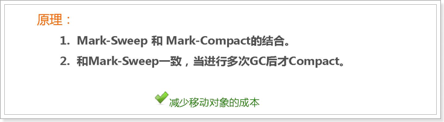
4.3.4. 分代收集算法(Generational-Collection)
内存效率：复制算法>标记清除算法>标记整理算法（此处的效率只是简单的对比时间复杂度，实际情况不一定如此）。
内存整齐度：复制算法=标记整理算法>标记清除算法。
内存利用率：标记整理算法=标记清除算法>复制算法。
可以看出，效率上来说，复制算法是当之无愧的老大，但是却浪费了太多内存，而为了尽量兼顾上面所提到的三个指标，标记/整理算法相对来说更平滑一些，但效率上依然不尽如人意，它比复制算法多了一个标记的阶段，又比标记/清除多了一个整理内存的过程
当前虚拟机的垃圾收集都采用分代收集算法，这种算法没有什么新的思想，只是根据对象存活周期的不同将内存分为几块。一般将 Java 堆分为新生代和老年代，这样我们就可以根据各个年代的特点选择合适的垃圾收集算法。
新生代 ，区域相对老年代较小，对像存活率低。
选择”标记-复制“算法，只需要付出少量对象的复制成本就可以完成每次垃圾收集。
而复制算法内存利用率不高的问题，通过hotspot中的两个survivor的设计得到缓解。
老年代，区域较大，对像存活率高。
没有额外的空间对它进行分配担保，选择“标记-清除”或“标记-整理”算法进行垃圾收集。
延伸面试问题： HotSpot 为什么要分为新生代和老年代？根据上面的对分代收集算法的介绍回答。
4.4. 垃圾收集器（了解）
如果说收集算法是内存回收的方法论，垃圾收集器就是内存回收的具体实现
4.4.1. Serial/Serial Old收集器
串行收集器是最古老，最稳定以及效率高的收集器，可能会产生较长的停顿，只使用一个线程去回收。新生代、老年代使用串行回收；新生代复制算法、老年代标记-压缩；垃圾收集的过程中会Stop The World（服务暂停）
它还有对应老年代的版本：Serial Old
参数控制： -XX:+UseSerialGC 串行收集器
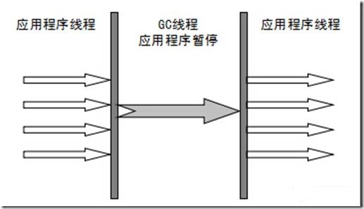
4.4.2. ParNew 收集器
ParNew收集器收集器其实就是Serial收集器的多线程版本，除了使用多线程进行垃圾收集之外，其余行为包括Serial收集器可用的所有控制参数、收集算法、Stop The world、对象分配规则、回收策略等都与Serial收集器完全一样，实现上这两种收集器也共用了相当多的代码。ParNew收集器的工作过程如下图所示。
ParNew收集器 ParNew收集器其实就是Serial收集器的多线程版本。新生代并行，老年代串行；新生代复制算法、老年代标记-压缩
参数控制：
-XX:+UseParNewGC ParNew收集器
-XX:ParallelGCThreads 限制线程数量
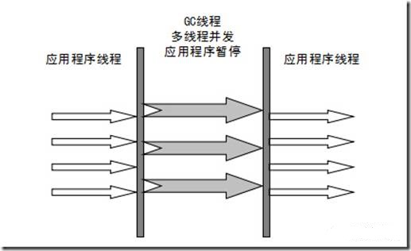
4.4.3. Parallel / Parallel Old 收集器
Parallel Scavenge收集器类似ParNew收集器，Parallel收集器更关注系统的吞吐量。可以通过参数来打开自适应调节策略，虚拟机会根据当前系统的运行情况收集性能监控信息，动态调整这些参数以提供最合适的停顿时间或最大的吞吐量；也可以通过参数控制GC的时间不大于多少毫秒或者比例；新生代复制算法、老年代标记-压缩
参数控制： -XX:+UseParallelGC 使用Parallel收集器+ 老年代串行
Parallel Old是Parallel Scavenge收集器的老年代版本，使用多线程和“标记－整理”算法。这个收集器是在JDK 1.6中才开始提供
参数控制： -XX:+UseParallelOldGC 使用Parallel收集器+ 老年代并行
4.4.4. CMS收集器
CMS（Concurrent Mark Sweep）收集器是一种以获取最短回收停顿时间为目标的收集器。目前很大一部分的Java应用都集中在互联网站或B/S系统的服务端上，这类应用尤其重视服务的响应速度，希望系统停顿时间最短，以给用户带来较好的体验。
从名字（包含“Mark Sweep”）上就可以看出CMS收集器是基于“标记-清除”算法实现的，它的运作过程相对于前面几种收集器来说要更复杂一些，整个过程分为4个步骤，包括：
- 初始标记（CMS initial mark）
- 并发标记（CMS concurrent mark）
- 重新标记（CMS remark）
- 并发清除（CMS concurrent sweep）
其中初始标记、重新标记这两个步骤仍然需要“Stop The World”。初始标记仅仅只是标记一下GC Roots能直接关联到的对象，速度很快，并发标记阶段就是进行GC Roots Tracing的过程，而重新标记阶段则是为了修正并发标记期间，因用户程序继续运作而导致标记产生变动的那一部分对象的标记记录，这个阶段的停顿时间一般会比初始标记阶段稍长一些，但远比并发标记的时间短。
由于整个过程中耗时最长的并发标记和并发清除过程中，收集器线程都可以与用户线程一起工作，所以总体上来说，CMS收集器的内存回收过程是与用户线程一起并发地执行。老年代收集器（新生代使用ParNew）
优点: 并发收集、低停顿
缺点: 产生大量空间碎片、并发阶段会降低吞吐量
参数控制：
-XX:+UseConcMarkSweepGC 使用CMS收集器
-XX:+ UseCMSCompactAtFullCollection Full GC后，进行一次碎片整理；整理过程是独占的，会引起停顿时间变长
-XX:+CMSFullGCsBeforeCompaction 设置进行几次Full GC后，进行一次碎片整理
-XX:ParallelCMSThreads 设定CMS的线程数量（一般情况约等于可用CPU数量）
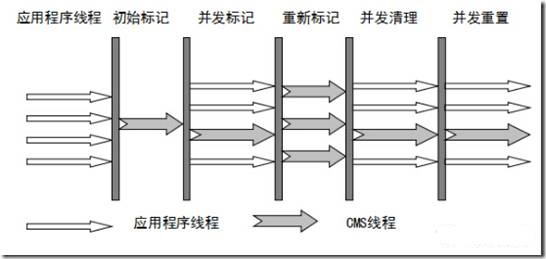
cms是一种预处理垃圾回收器，它不能等到old内存用尽时回收，需要在内存用尽前，完成回收操作，否则会导致并发回收失败
4.4.5. G1收集器
核心亮点
停顿时间可控性、分区管理、并发标记和部分回收、空间整理效率和可扩展性。
相比 CMS 的优势在哪？
- 可预测的停顿时间：G1 收集器通过将堆内存划分为多个区域（Region），实现了增量式的垃圾回收。它能够根据用户指定的目标停顿时间（Pause Time）来制定优化策略，从而在可控的时间范围内完成垃圾回收，减少应用程序的停顿时间。
- 堆内存的分区管理：G1 收集器将整个堆划分为多个大小相等的区域，每个区域都可以是 Eden 区、Survivor 区或者老年代区域。这种分区管理方式使得 G1 收集器能够更加灵活地进行垃圾回收，只处理其中的一部分区域，避免了全局性的停顿。
- 并发标记和部分回收：G1 收集器采用了并发标记的方式，在并发标记过程中，应用程序可以继续运行。同时，G1 收集器在每次收集时只回收一部分区域，即根据垃圾的产生情况选择垃圾最多的区域进行回收，避免了全堆的扫描和清理操作，提高了垃圾收集的效率。
- 空间整理的效率：G1 收集器在标记垃圾后，会选择垃圾最多的区域进行回收。此时，只会回收该区域中的垃圾对象，而不会进行全堆的压缩式整理。这种增量式的回收方式可以减少停顿时间，同时也降低了空间整理的开销。
- 高可扩展性：G1 收集器具备较高的可扩展性，可以适应不同大小的堆和多核处理器的环境。通过合理调整分区数量和大小，可以更好地平衡内存占用和垃圾回收的效率。
上面提到的垃圾收集器，收集的范围都是整个新生代或者老年代，而G1不再是这样。使用G1收集器时，Java堆的内存布局与其他收集器有很大差别，它将整个Java堆划分为多个大小相等的独立区域（Region），虽然还保留有新生代和老年代的概念，但新生代和老年代不再是物理隔阂了，它们都是一部分（可以不连续）Region的集合。
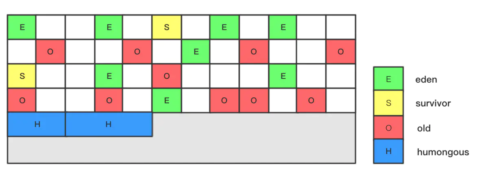
每个Region被标记了E、S、O和H，说明每个Region在运行时都充当了一种角色，其中H是以往算法中没有的，它代表Humongous，这表示这些Region存储的是巨型对象（humongous object，H-obj），当新建对象大小超过Region大小一半时，直接在新的一个或多个连续Region中分配，并标记为H。
为了避免全堆扫描，G1使用了Remembered Set来管理相关的对象引用信息。当进行内存回收时，在GC根节点的枚举范围中加入Remembered Set即可保证不对全堆扫描也不会有遗漏了。
如果不计算维护Remembered Set的操作，G1收集器的运作大致可划分为以下几个步骤：
1、初始标记（Initial Making）
2、并发标记（Concurrent Marking）
3、最终标记（Final Marking）
4、筛选回收（Live Data Counting and Evacuation）
看上去跟CMS收集器的运作过程有几分相似，不过确实也这样。初始阶段仅仅只是标记一下GC Roots能直接关联到的对象，并且修改TAMS（Next Top Mark Start）的值，让下一阶段用户程序并发运行时，能在正确可以用的Region中创建新对象，这个阶段需要停顿线程，但耗时很短。并发标记阶段是从GC Roots开始对堆中对象进行可达性分析，找出存活对象，这一阶段耗时较长但能与用户线程并发运行。而最终标记阶段需要把Remembered Set Logs的数据合并到Remembered Set中，这阶段需要停顿线程，但可并行执行。最后筛选回收阶段首先对各个Region的回收价值和成本进行排序，根据用户所期望的GC停顿时间来制定回收计划，这一过程同样是需要停顿线程的，但Sun公司透露这个阶段其实也可以做到并发，但考虑到停顿线程将大幅度提高收集效率，所以选择停顿。下图为G1收集器运行示意图：
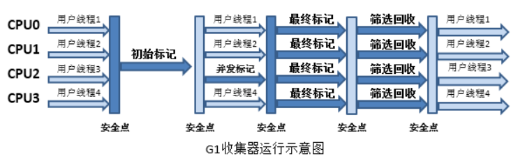
4.4.6. 垃圾回收器比较
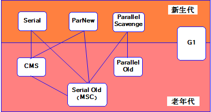
如果两个收集器之间存在连线，则说明它们可以搭配使用。虚拟机所处的区域则表示它是属于新生代还是老年代收集器。
整堆收集器： G1
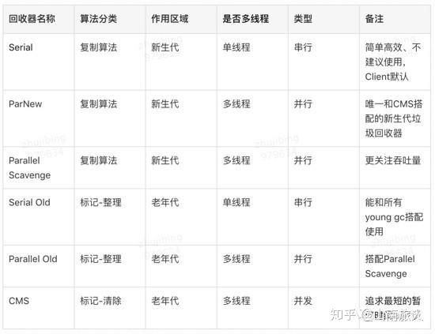
垃圾回收器选择策略 ：
客户端程序 ： Serial + Serial Old；
吞吐率优先的服务端程序（比如：计算密集型） ： Parallel Scavenge + Parallel Old；
响应时间优先的服务端程序 ：ParNew + CMS。
G1收集器是基于标记整理算法实现的，不会产生空间碎片，可以精确地控制停顿，将堆划分为多个大小固定的独立区域，并跟踪这些区域的垃圾堆积程度，在后台维护一个优先列表，每次根据允许的收集时间，优先回收垃圾最多的区域（Garbage First）。